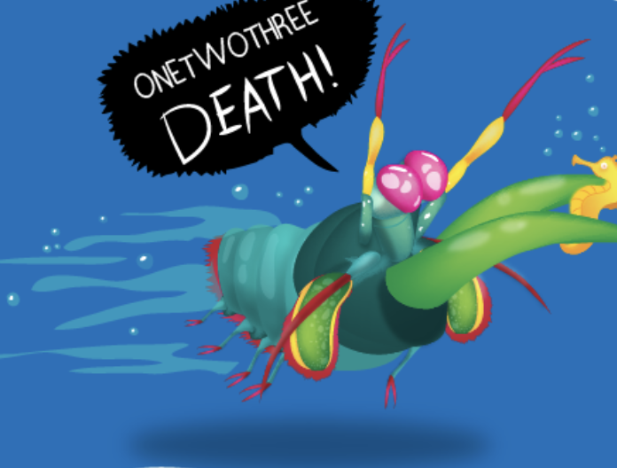

Fatos sobre o Stomatopoda
Informações Gerais

Conhecido como pesadelo dos mares, o Stomatopoda - Odontodactylus scyllarus - é um dos animais mais antigos que ainda vive na terra e, apesar de parecer inofensivo pelo tamanho, o seu golpe costuma ser mortal.
| Reino | Animalia |
| Filo | Arthropoda |
| Subfilo | Crustacea |
| Classe | Malacostraca |
| Subclasse | Hoplocarida |
| Ordem | Stomatopoda |
Visão Super Colorida
O Stomatopoda tem uma capacidade de visão impressionante. Enquanto os seres humanos têm três receptores de cores, este singelo animalzinho possui 16 (Dezesseis) receptores. Dessa forma, imagine que o arco-íris que enxergamos com tamanha beleza com nossa capacidade é percebido como uma verdadeira bomba-atômica de luzes e beleza para o Stomatopoda.
Uma super-força nas apêndices
Já pensou levar um soco a uma velocidade de 80 km/h? Você não entendeu errado, o soco do Stomatopoda pode atingir a marca de 80 km/h. É estimado que com um décimo dessa velocidade, um ser humano conseguiria arremesar uma bola de baseball no espaço.
Por este motivo, não é recomendável se ter um Stomatopoda em um aquário. Além de ser um risco para os demais animais do ambiente, existe uma grande chance de o vidro se quebrar tamanha a força exercida pelo animal.